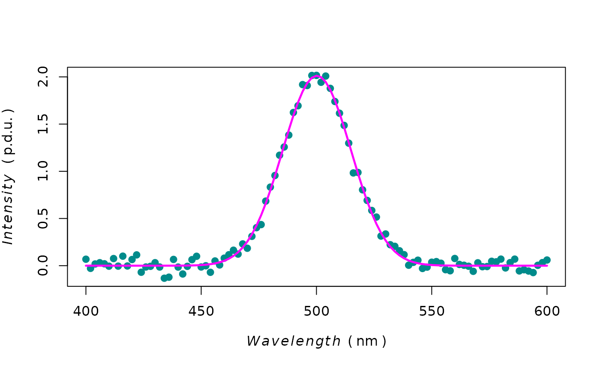

General Function for Non-Linear Optimization/Fitting of EPR Parameters/Data
Source:R/optim_for_EPR_fitness.R
optim_for_EPR_fitness.RdGeneral-purpose optimization of the objective fn function (also called "fitness")
which is to be minimized in order to fit theoretical models (EPR simulations)
onto the experimental data. Several methods/algorithms are implemented (see also Details):
from the nloptr package: slsqp,
neldermead, crs2lm, sbplx,
cobyla, lbfgs; from the
minpack.lm package:
nls.lm and finally
from the pso package:
psoptim.
Usage
optim_for_EPR_fitness(
method = "neldermead",
x.0,
fn,
lower,
upper,
data,
Nmax.evals = 512,
tol.step = 5e-07,
pswarm.size = NULL,
pswarm.diameter = NULL,
pswarm.type = NULL,
eval.optim.progress = FALSE,
fix.optim.x.0.id = NULL,
...
)Arguments
- method
Character string, pointing to applied optimization method/algorithm. One may choose one from those listed in
Details, default:method = "neldermead", setting up the "Nelder-Mead" simplex method.- x.0
Numeric vector with the initial values to be optimized in order to fit onto the experimental data.
- fn
Objective function that is to be minimized. Usually it is the function calculating the sum of residual squares, where a more general parameterized one can be implemented in (see
DetailsandExamples).- lower, upper
lower and upper bound constraints.
- data
Data frame object, containing columns/variables (e.g. intensity of an EPR spectrum), required to undergo a fitting/optimization process.
- Nmax.evals
Numeric value, maximum number of function evaluations and/or iterations. The only one method, limited by this argument, is
nls.lm, whereNmax.evals = 1024. HigherNmax.evalsmay extremely extend the optimization time, therefore the default value readsNmax.evals = 512. However, the"pswarm"method requires at least the default or even higher values.- tol.step
Numeric, the smallest optimization step (relative change) between 2 iterations to stop the optimization procedure. For the
method = "pswarm"(particle swarm optimization procedure) it actually corresponds to tolerance for restarting. Once the maximum distance between the "best" particle and all the others is less thantol.step*pswarm.diameter) the algorithm restarts. See alsopsoptim. Default:tol.step = 5e-7.- pswarm.size
Numeric value, which equals to particle swarm size (i.e. number of particles), if
method = "pswarm". The default value (pswarm.size = NULL) actually corresponds tofloor(10+2*sqrt(length(Np)))(forSPSO2007, see thepswarm.typeargument), e.g. to optimize 8 parameters, number of particles = 15. Thelength(Np)corresponds either tolength(x.0)or to difference between thelength(x.0)and number of parameters, for which(upper - lower) == 0(i.e. thosex.0parameters are actually fixed/won't be optimized). For theSPSO2011the default number of particles equals to40.- pswarm.diameter
Numeric value, corresponding to diameter of the particle swarm search space (in case
method = "pswarm"). The default value (pswarm.diameter = NULL) refers to the Euclidean distance, defined as: $$\sqrt{\sum_k\,(\text{upper}[k] - \text{lower}[k])^2}$$- pswarm.type
Character string, setting the type/version of particle swarm algorithm if
method = "pswarm". There are two types available:pswarm.type = "SPSO2007"andpswarm.type = "SPSO2011". The latter introduced an adaptive random topology, which allows the swarm to dynamically adjust its communication structure. This helps in maintaining diversity in the swarm and improves the algorithm's ability to escape local optima. This type generally offers better performance on larger multidimensional spaces than thepswarm.type = "SPSO2007", which uses a more static topology. Details may be found in theReferences. Default:pswarm.type = NULL(actually corresponding to"SPSO2007", that performs slightly better on smaller scales such as common simulations of EPR spectra with lower number of parameters like hyperfine coupling constants).- eval.optim.progress
Logical. If
TRUEa progress of the optimization/fitting, defined by themethodargument, is monitored/tracked in the R console. The default value is set toFALSEbecause higher number of evaluations/iterations might result in several tens or hundreds of rows with the information, depending on the appliedmethod. In the case of{nloptr}methods/functions as well asmethod = "pswarm"it displays the iteration number (each 10-th iteration per particle shown forpswarm) and the value of the objective/fitness function (e.g. least-square minimization or RSS). Additionally,pswarmmethod shows possible shrinking of the particle swarm diameter by the convergence. For themethod = "levenmarq"it shows the iteration/evaluation number, sum of residual squares (RSS) and the relevant parameter (Par.) value. In theeval_sim_EPR_isoFitandquantify_EPR_Sim_seriesthis argument can be combined with themsg.optim.progress.- fix.optim.x.0.id
Numeric value/vector of the
x.0indices, corresponding tox.0elements that will be fixed during the optimization/fitting, i.e. they won't be optimized because theirlowerandupperlimits equal to related elements of the initialx.0. For example, if the 1st and the 3rd parameter/element of thex.0are supposed to be fixed, putfix.optim.x.0.id = c(1,3). Default:fix.optim.x.0.id = NULL, i.e. none of thex.0elements is fixed and all parameters will be optimized as required (see alsoeval_sim_EPR_isoFit). However, even in the case iffix.optim.x.0.id = NULL, the parameters can be fixed by adjustment of the correspondinglowerandupperarguments.- ...
additional arguments passed to the function.
Value
For all listed algorithms the function returns list with the elements like
(please, refer to e.g. Value in eval_sim_EPR_isoFit)
The best parameters found (
parvector, depending on the initialx.0set of parameters).The value of
fn(minimum value) corresponding to the bestpar.Number of evaluations and/or iterations (in case of the
method = "pswarm", see alsoValuein thepsoptim) before the termination.(Un)successful termination information (
convergenceorrsstrace), usually corresponding either to integer value showing the (un)successful termination like2: Maximum number of iterations reached(or integer code > 0 indicating successful completion) or in the case ofnls.lm, it returns a vector with the values equal to sum of the residual squares at each iteration.A descriptive message/character string, giving the additional information about the optimization procedure/termination. By default (e.g. within the
eval_sim_EPR_isoFit), this is however "turned off", for the sake of simplicity, because most of the information can be found in the previous convergence list element or can be activated by theeval.optim.progressargument.Additional objects (lists/vectors/values), providing information about the fitting/optimization process and depending on the
methodargument. It may or may not be returned by the specific function(s) (e.g. by theeval_sim_EPR_isoFit).
Details
All algorithms are based on the least-square minimization however,
the fn definition in case of nls.lm must be provided as a difference/residual
vector (see also eval_kinR_EPR_modelFit) and not as sum of differences/residual squares.
The applied optimization/fitting methods are summarized in the following table (please, consult the details
in References or in the individual function documentation - links in the Description) =>
| Method/Algorithm | Package | Short Description |
slsqp | {nloptr} | Sequential quadratic programming method for non-linearly constrained, gradient-based optimization. |
cobyla | {nloptr} | Constrained optimization by linear approximations, algorithm for derivative-free optimization with nonlinear inequality and equality constraints. |
lbfgs | {nloptr} | Low-storage version of the Broyden-Fletcher-Goldfarb-Shanno (BFGS) method. This is a quasi-Newton method well suited for the optimization problems with a large number of variables. |
neldermead | {nloptr} | Nelder-Mead ("N-M") simplex algorithm. |
crs2lm | {nloptr} | Controlled Random Search (CRS) algorithm (and in particular, the CRS2 variant) with the `local mutation' modification. |
sbplx | {nloptr} | Subplex algorithm, which is a variant of the "N-M" method on a sequence of sub-spaces. |
nls.lm (levenmarq) | {minpack.lm} | Modified Levenberg-Marquardt algorithm. It is a combination of gradient descent and Gauss-Newton method. |
psoptim (pswarm) | {pso} | Particle swarm optimization, which is a population-based stochastic optimization algorithm motivated by the intelligent collective behavior of some animals such as flocks of birds or schools of fish. |
Not all {nloptr}-methods are implemented into the optim_for_EPR_fitness. Those summarized above
were tested by the EPR simulation fit (see eval_sim_EPR_isoFit) on the experimental spectra
of TEMPOL and Wuster's blue radicals. They provide the best results (without extensive "playing"
with nl.opts, i.e. with options to control the optimization procedure) and proceed
relatively fast.
References
Johnson SG (2023). “The NLopt nonlinear-optimization package.” https://github.com/stevengj/nlopt.
Stamm A (2023). “nloptr.” https://github.com/astamm/nloptr/.
Mullen KM, Elzhov TV, Spiess A, Bolker B (2023). “minpack.lm.” https://github.com/cran/minpack.lm.
Gavin HP (2019). “The Levenberg-Marquardt algorithm for nonlinear least squares curve-fitting problems.” Department of civil and environmental engineering, Duke University, https://people.duke.edu/~hpgavin/lm.pdf.
Adyatama A (2019). “Particle Swarm Optimization.” https://rpubs.com/argaadya/intro-pso.
Tam A (2021). “A Gentle Introduction to Particle Swarm Optimization.” https://machinelearningmastery.com/a-gentle-introduction-to-particle-swarm-optimization/.
Ugolotti R, Cagnoni S (2016). "A Fair Comparison Between Standard PSO Versions." In: Rossi F, Mavelli F, Stano P, Caivano D (eds), Advances in Artificial Life, Evolutionary Computation and Systems Chemistry, WIVACE 2015, Communications in Computer and Information Science, Springer, https://doi.org/10.1007/978-3-319-32695-5_1.
Zambrano-Bigiarini M, Clerc M, Rojas-Mujica R (2013). "Standard Particle Swarm Optimisation 2011 at CEC-2013: A baseline for future PSO improvements." 2013 IEEE Congress on Evolutionary Computation, https://ieeexplore.ieee.org/document/6557848.
Examples
## generate Gaussian peak UV-Vis spectrum
set.seed(42)
wl <- seq(400, 600, by = 2) ## Wavelength
y <- 2 * exp(- (wl - 500)^2/(2 * 15^2)) +
rnorm(length(wl), sd = 0.05) ## Intensity
#
## data frame
df.model.expr <- data.frame(
Wavelength_nm = wl,
Intensity = y
)
#
## parametrize the fitting function
## `x` and `Intensity.fit` are column headers
Gaussian_Fit_x0 <-
function(data,x,Intensity.fit,x0) {
data[[Intensity.fit]] <-
x0[1] * exp(- (data[[x]] - x0[2])^2 / (2 * x0[3]^2))
return(data[[Intensity.fit]])
}
#
## fitness function
min_residuals_x0 <-
function(data,x,Intensity.fit,x0) {
sum(
## `"Intensity"`, see `df.model.expr`:
(data[["Intensity"]] -
Gaussian_Fit_x0(data,x,Intensity.fit,x0))^2
)
}
#
## own optimization
optim.fit.list <-
optim_for_EPR_fitness(
method = "neldermead",
x.0 = c(1.4,480,17), ## initial params. guess
fn = min_residuals_x0,
lower = c(1.3,470,13), ## lower bound for `x.0`
upper = c(2.2,520,18), ## upper bound for `x.0`
data = df.model.expr,
x = "Wavelength_nm",
Intensity.fit = "Fit",
Nmax.evals = 256
)
#
## best optimized parameters
optim.fit.list$par
#> [1] 2.0124565 500.1720983 14.8447207
#
## compare these parameters with those
## returned by the `stats::nls()` function,
## which by default, applies `Gauss-Newton`
## optim. algorithm
optim.fit.nls <-
stats::nls(
Intensity ~ A * exp(- (Wavelength_nm - mu)^2/(2 * sigma^2)),
data = df.model.expr,
start = list(A = 1.4, mu = 480, sigma = 17)
)
unname(coef(optim.fit.nls))
#> [1] 2.0124576 500.1721898 14.8446668
#
## additional returned objects by `optim.fit.list`
## min RSS (corresponding to `fn`)
optim.fit.list$value
#> [1] 0.26573924
#
## number of iterations/evaluations
optim.fit.list$iter
#> [1] 184
#
## message + convergence (must be > 0)
optim.fit.list$message
#> [1] "NLOPT_XTOL_REACHED: Optimization stopped because xtol_rel or xtol_abs (above) was reached."
optim.fit.list$convergence
#> [1] 4
#
## best fit ("Fit" column) into data frame
df.model.expr[["Fit"]] <-
Gaussian_Fit_x0(
data = df.model.expr,
x = "Wavelength_nm",
Intensity.fit = "Fit",
x0 = optim.fit.list$par
)
#
## plot the spectrum + best fit
df.model.expr %>% {
graphics::plot(
.$Wavelength_nm,
.$Intensity,
xlab = bquote(italic(Wavelength)~~"("~nm~")"),
ylab = bquote(italic(Intensity)~~~"("~p.d.u.~")"),
col = "darkcyan",
pch = 16,
cex = 1.2
)
graphics::lines(
.$Wavelength_nm,
.$Fit,
col = "magenta",
lwd = 2.4
)
}
